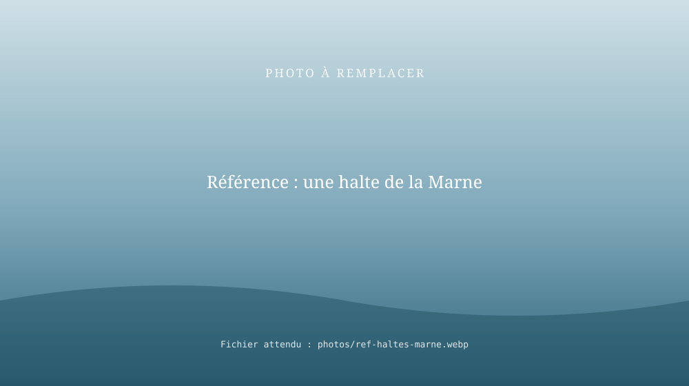

Haltes fluviales sur la Marne
4 haltes fluviales exploitées sur la Marne de 2019 à 2025 en collaboration avec Coulommiers Pays de Brie Tourisme, dont 2 à La Ferté-sous-Jouarre, créées sur des sites où il n'y avait rien à l'origine. Aménagement, accueil des plaisanciers, animation des berges.
Notre histoire